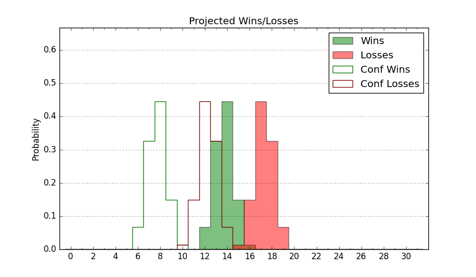

| Home | Game Probabilities | Conferences | Preseason Predictions | Odds Charts | NCAA Tournament |
| City: | Notre Dame, Indiana | |
| Conference: | ACC (12th)
| |
| Record: | 6-10 (Conf) 12-15 (Overall) | |
| Ratings: | Comp.: 9.4 (91st) Net: 9.4 (91st) Off: 113.3 (74th) Def: 103.9 (126th) SoR: 0.0 (115th) |
| Remaining | ||||||
|---|---|---|---|---|---|---|
| Date | Opponent | Win Prob | Pred. | |||
| 2/26 | @ Clemson (25) | 10.6% | L 62-75 | |||
| 3/1 | @ Wake Forest (67) | 24.8% | L 64-71 | |||
| 3/5 | Stanford (88) | 63.7% | W 74-70 | |||
| 3/8 | California (109) | 72.4% | W 76-70 | |||
| Previous | Game Score | |||||
| Date | Opponent | Win Prob | Result | Off | Def | Net |
| 11/6 | Stonehill (312) | 95.1% | W 89-60 | 5.2 | 6.1 | 11.3 |
| 11/11 | Buffalo (351) | 97.5% | W 86-77 | -10.0 | -6.5 | -16.5 |
| 11/16 | @Georgetown (85) | 32.4% | W 84-63 | 34.8 | 15.0 | 49.7 |
| 11/19 | North Dakota (274) | 92.8% | W 75-58 | -14.1 | 18.9 | 4.8 |
| 11/22 | Elon (165) | 82.5% | L 77-84 | 2.9 | -24.5 | -21.7 |
| 11/26 | (N) Rutgers (74) | 41.5% | L 84-85 | 1.8 | -0.1 | 1.7 |
| 11/28 | (N) Houston (3) | 5.0% | L 54-65 | -2.2 | 19.9 | 17.8 |
| 11/30 | (N) Creighton (34) | 22.7% | L 76-80 | 9.3 | 0.6 | 9.9 |
| 12/3 | @Georgia (40) | 14.6% | L 48-69 | -18.5 | -0.6 | -19.1 |
| 12/7 | Syracuse (136) | 78.6% | W 69-64 | -12.9 | 8.2 | -4.7 |
| 12/11 | Dartmouth (204) | 87.1% | W 77-65 | -3.1 | -2.7 | -5.8 |
| 12/22 | Le Moyne (354) | 97.7% | W 91-62 | 2.4 | 6.0 | 8.4 |
| 12/31 | @Georgia Tech (113) | 46.0% | L 75-86 | 11.7 | -25.5 | -13.8 |
| 1/4 | North Carolina (43) | 38.8% | L 73-74 | -1.5 | 4.1 | 2.6 |
| 1/8 | @North Carolina St. (104) | 42.5% | L 65-66 | 0.4 | 3.0 | 3.4 |
| 1/11 | @Duke (1) | 2.1% | L 78-86 | 26.6 | -9.7 | 16.9 |
| 1/13 | Boston College (189) | 85.5% | W 78-60 | 11.2 | 1.6 | 12.8 |
| 1/18 | @Syracuse (136) | 51.9% | L 69-77 | -9.8 | 3.6 | -6.2 |
| 1/25 | @Virginia (100) | 41.3% | W 74-59 | 20.8 | 9.4 | 30.1 |
| 1/28 | Georgia Tech (113) | 74.4% | W 71-68 | 3.1 | -9.4 | -6.3 |
| 2/1 | @Miami FL (176) | 60.4% | L 57-63 | -25.5 | 3.2 | -22.3 |
| 2/4 | @Florida St. (81) | 30.8% | L 60-67 | -18.7 | 14.0 | -4.8 |
| 2/8 | Virginia Tech (140) | 79.6% | L 63-65 | -20.3 | 3.1 | -17.2 |
| 2/12 | @Boston College (189) | 63.4% | W 97-94 | 5.1 | -14.5 | -9.4 |
| 2/16 | Louisville (22) | 27.0% | L 60-75 | -9.3 | 0.0 | -9.3 |
| 2/19 | SMU (36) | 35.3% | L 73-97 | -9.6 | -24.5 | -34.0 |
| 2/22 | Pittsburgh (45) | 40.1% | W 76-72 | 15.8 | -3.0 | 12.8 |
| Stats & Trends | |||||
|---|---|---|---|---|---|
| Current | Day | Week | Month | Season | |
| Composite | 9.4 | +0.0 | -0.8 | -3.7 | -6.2 |
| Comp Rank | 91 | -1 | -7 | -17 | -43 |
| Net Efficiency | 9.4 | +0.0 | -0.8 | -3.5 | -- |
| Net Rank | 91 | -1 | -6 | -16 | -- |
| Off Efficiency | 113.3 | -0.0 | +0.3 | -2.8 | -- |
| Off Rank | 74 | +1 | +3 | -29 | -- |
| Def Efficiency | 103.9 | +0.1 | -1.1 | -0.8 | -- |
| Def Rank | 126 | +2 | -12 | +1 | -- |
| SoS Rank | 77 | -- | +7 | +11 | -- |
| Exp. Wins | 13.7 | +0.0 | +0.2 | -1.6 | -5.2 |
| Exp. Conf Wins | 7.7 | +0.0 | +0.2 | -1.6 | -3.2 |
| Conf Champ Prob | 0.0 | -- | -- | -- | -3.9 |

| Advanced Stats | ||
|---|---|---|
| Stat | Value | Rank |
| Off Eff FG % | 0.548 | 70 |
| Off Ast Ratio | 0.144 | 189 |
| Off ORB% | 0.313 | 113 |
| Off TO Rate | 0.141 | 128 |
| Off FT Ratio | 0.340 | 148 |
| Def Eff FG % | 0.500 | 142 |
| Def Ast Ratio | 0.151 | 216 |
| Def ORB% | 0.223 | 6 |
| Def TO Rate | 0.138 | 253 |
| Def FT Ratio | 0.292 | 92 |